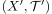
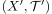

Folgenkompaktheit als Isomorphieinvariante
1. Satz
Seien  und  topologische Räume und
und  topologische Räume und  ein Homeomorphismus.
Dann ist
ein Homeomorphismus.
Dann ist  ein folgenkompakter Raum g.d.w.
ein folgenkompakter Raum g.d.w.  folgenkompakt ist.
folgenkompakt ist.
2. Beweis
Folgt aus der Folgenkompaktheit der Bildmenge einer stetigen Funktion für eine folgenkompakte Menge und der Symmetrie eines Homeomorphismus.